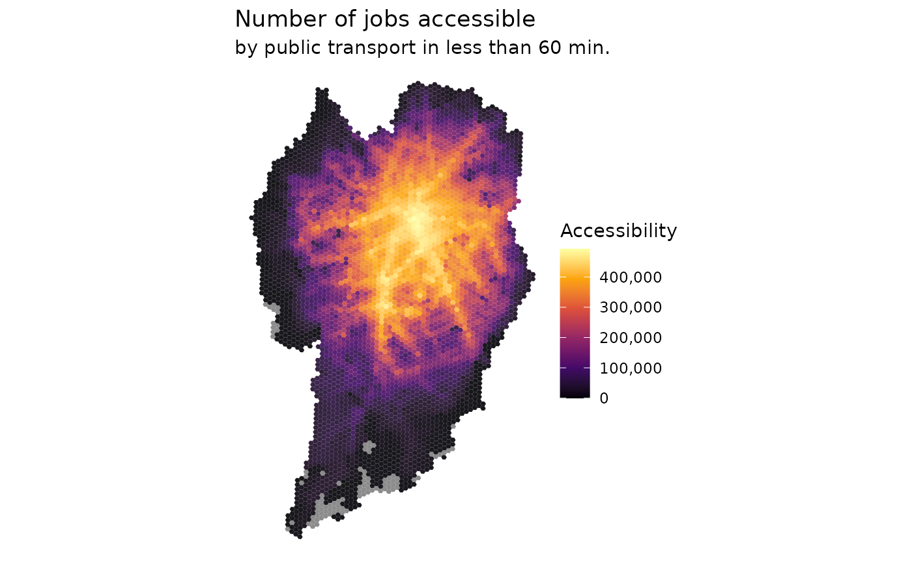

../vignettes/access_maps.Rmd
access_maps.RmdAbstract
Mapping urban accessibilityLoad libraries
Download accessibility data
# download aop data
df <- aopdata::read_access(city='Curitiba',
mode='public_transport',
year=2019,
peak = F,
geometry = T,
showProgress = F)Plot map with spatial distribution of access to job opportunities
# plot map accessibility
ggplot() +
geom_sf(data=df, aes(fill=CMATT60), color=NA, alpha=.9) +
scale_fill_viridis_c(option = "inferno", labels=scales::percent) +
labs(title='Proportion of jobs accessible', fill="Accessibility",
subtitle='by public transport in less than 60 min.') +
theme_void()
Map access to Schools
# plot map Schools
ggplot() +
geom_sf(data=df, aes(fill=S001), color=NA, alpha=.7) +
scale_fill_viridis_c(option = "inferno") +
labs(title='Spatial distribution of public schools', fill="N. of schools") +
theme_void()
ggplot() +
geom_sf(data=df, aes(fill=df$S001), color=NA, alpha=.7) +
scale_fill_viridis_c(option = "inferno") +
labs(title='Spatial distribution of public schools', fill="N. of schools") +
theme_void()